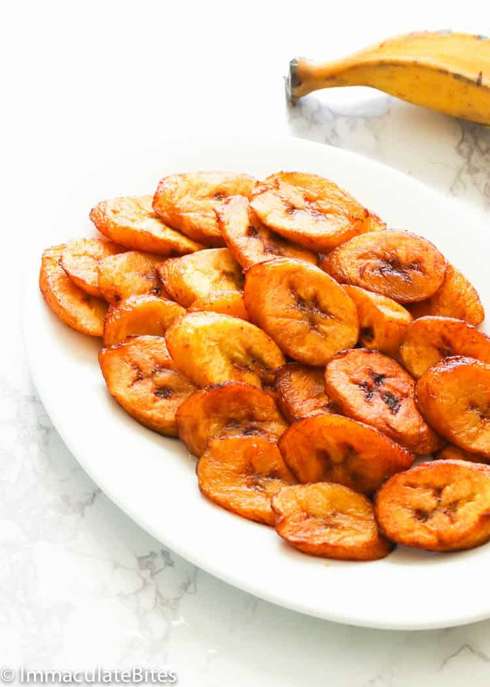

Fried Plantain/Dodo Recipe

Description
Ripe plantain fried until golden brown is a West African and Caribbean staple.
Ingredients
- Ripe plantain
- Vegetable oil or another oil with a high smoke point
Steps taken to prepare fried plantain/dodo
- Fill a pan or skillet about 2 inches deep with oil and heat over medium-high flame for about 5 minutes. The oil will start "moving" when it's ready.
- Meanwhile, skin and cut plantain into slices about 1-inch thick. Add a sheet of newspaper or paper towel to a plate to help drain oil from finished product and set aside.
- Add plantain slices to hot oil to cook. Depending on your pan size, you'll likely have to cook in batches to avoid crowding the pan (which would slow down the cooking time).
- Allow the slices to cook for about 5 minutes then flip. The bottoms of each slice should be golden brown, if not, flip back and cook a bit longer. Repeat on the opposite side then remove dodo from oil and place onto paper towel-lined plate.
- Repeat with remaining slices until finished. Enjoy!